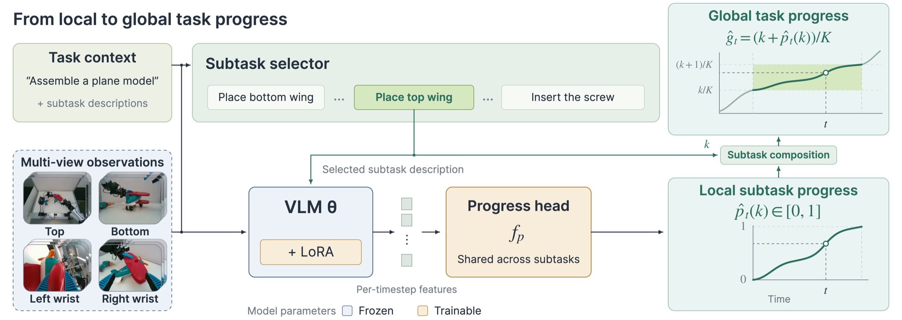

Supplementary material · ICRA 2027 submission · Anonymous Authors
PRISM
Compositional Reward Modeling for Long-Horizon Manipulation with Structured Progress Supervision
The main paper presents the method and main results; this supplement adds videos, implementation details, and reward-prediction experiments on three additional tasks.
01 · Compositional progress
Break down long tasks. Compose their progress.
Describe a long task as a sequence of subtasks. Select the unfinished subtask, estimate its local progress, and combine it with credit for completed subtasks to track whole-task progress.
For the compositional formulation and shared predictor, see Sec. III-A and Fig. 2 of the paper.

02 · Policy rollout videos
Autonomous policy rollouts.
The videos show one selected successful evaluation episode per task on real-world robots, in four synchronized camera views.
In the main paper: aggregate policy success rates in Sec. IV-E.1 and Fig. 5 (offline RL), and Sec. IV-E.2 and Fig. 6 (progress-weighted BC).
03 · Reward model evaluation
Unified compositional reward model for long-horizon tasks
Same everywhereOne architecture and one language interface for pretraining, adaptation and inference.
Ours reuses the complete pretrained predictor through task and subtask descriptions. Subtask selection and local-progress prediction share the same VLM, with no task-specific classifier replacement or manual vocabulary mapping. Long-task adaptation fine-tunes this same predictor.
For the shared model and training, see Secs. III-A and III-C of the paper; for experiments on reusing the complete pretrained predictor, see Sec. IV-C.3 and Table IV.
Composition is the key!
The comparisons below evaluate composition, pretraining, and task-related adaptation for whole-task progress prediction on red car assembly.
Red car model assembly · RMSE in subtask units ↓
Zero-shot · Qwen3.5-4B
| Model / procedure | Selection acc. ↑ | RMSE ↓ |
|---|---|---|
| Base Qwen3.5-4B: direct prediction | — | 4.541 |
| Base Qwen3.5-4B: composition (our workflow) | 25.37% | 3.068 |
| Ours (pretrained from Qwen3.5-4B; self-selected subtask) | 69.46% | 1.380 |
- Composition improves whole-task progress prediction. With the same base Qwen3.5-4B model, our compositional workflow lowers RMSE from 4.541 to 3.068.
- Pretraining improves zero-shot transfer to car assembly. Our pretrained compositional predictor lowers RMSE further, from 3.068 to 1.380, without task-related adaptation.
Zero-shot · GPT6
| Model / procedure | Selection acc. ↑ | RMSE ↓ |
|---|---|---|
| GPT6: direct prediction | — | 1.578 |
| GPT6: composition (our workflow) | 86.56% | 0.524 |
| Ours (pretrained; GPT6-selected subtask) | 86.56% | 0.494 |
GPT6 refers to GPT6-Astra-high throughout this website.
- Composition also helps a frontier VLM. GPT6's whole-task RMSE falls from 1.578 to 0.524, supporting subtask-based composition as a useful formulation for this long-horizon task.
- Our pretrained local-progress predictor improves accuracy while reducing API cost. Keeping GPT6's selected subtask fixed, replacing its progress predictor with ours lowers RMSE from 0.524 to 0.494 and avoids the GPT6 progress API call. The subtask-selection API call remains.
Task-related adaptation (15 trajectories)
| Model / procedure | Selection acc. ↑ | RMSE ↓ |
|---|---|---|
| GPT6: composition (zero-shot reference) | 86.56% | 0.524 |
| Ours, no pretraining + adaptation | 93.33% | 0.502 |
| Ours, pretrained + adaptation | 94.70% | 0.394 |
With 15 adaptation trajectories, our pretrained Qwen3.5-4B model outperforms zero-shot GPT6 composition on car assembly. Whole-task RMSE is 0.394 versus 0.524, and subtask-selection accuracy is 94.70% versus 86.56%.
For the composition, pretraining, and adaptation comparisons, see Sec. IV-D.1–2 and Table VIII of the paper. GPT6-selected results combine API subtask selection with local progress prediction.
GPT6 composition comes at a high cost
In the reported setup, composition costs ≈ US$38.08 per trajectory and takes 41.55 s per query.
Ours takes 469.4 ms per query on an NVIDIA H100, with no API fee.
Reported latencies were measured over 8,000 calls. For both Ours and GPT6 composition, the per-query latency sums subtask selection and within-stage progress. API costs use 1 fps on trajectories averaging 340 s in the reported experiment; local GPU costs are not priced.
| Scoring procedure | Latency per query | API cost US$ / trajectory |
|---|---|---|
| Ours NVIDIA H100 | 2 × 234.7 ms =469.4 ms | No API fee |
| GPT6 composition Total | 29.00 + 12.55 =41.55 s | ≈ $38.08/traj |
| Subtask selection | 29.00 s | ≈ $20.31/traj |
| Within-stage progress | 12.55 s | ≈ $17.77/traj |
Lowest RMSE on unseen trajectories across five tasks
We extend the paper's airplane and red car evaluation (Sec. IV-C.2, Table III) with three additional reward-prediction tasks: Firetruck assembly, Circuit assembly and switch activation, and Pupgo car assembly.
With 15 adaptation trajectories per task (D15), Ours achieves the lowest RMSE on all five tasks.
RMSE on 24–30 unseen test trajectories per task ↓ In subtask units; lower is better.
| Reward model | Pupgo car assembly (up to 18 subtasks) |
Firetruck assembly (up to 9 subtasks) |
Circuit assembly and switch activation (up to 3 subtasks) |
Airplane assembly (up to 9 subtasks) |
Red car assembly (up to 10 subtasks) |
|---|---|---|---|---|---|
| GPT6: Composition | 1.8135 | 0.2914 | 0.2920 | 0.4505 | 0.5240 |
| SARM (D15) | 0.4042 | 0.5406 | 0.3612 | 0.7474 | 1.1240 |
| SARM2 (D15) | 0.3885 | 0.5166 | 0.2975 | 0.4980 | 0.6290 |
| RoboMeter (D15) | 0.3189 | 0.5202 | 0.1864 | 0.4930 | 0.6580 |
| Ours (D15) | 0.2561 | 0.2264 | 0.1563 | 0.3080 | 0.3940 |
How predictions respond to setbacks
Watch the contact-rich interactions, failures, and retries alongside each model's progress curve.
Progress is shown in accumulated subtask units; pink marks annotated failure, and boundary triangles mark predictions outside the plotted range.
04 · Method details
The specifics the paper defers to this page.
Progress supervision, model training, and policy-learning setups.
Structured progress supervision
In the main paper: the supervision method in Sec. III-B and Fig. 3, and annotation quality and target utility in Sec. IV-B and Tables I–II. Below, a synchronized example and construction steps show how sparse annotations become dense progress targets.
Whole-task composition
Here, \(t\) is global time along the whole-task trajectory. \(k_t^\star\) is the zero-based subtask index, \(p_t\) is that subtask's local progress at global time \(t\), and \(K\) is the number of subtasks. Completed subtasks retain their credit when \(p_t\) resets. At a completed boundary, \((k,1)\) and \((k+1,0)\) coincide.
The remaining quantity is \(p_t\): below, construct this local progress from subtask boundaries, action quality, and subtask outcomes.
Sparse annotations
Annotators mark subtask boundaries, action-quality (AQ) intervals of suboptimal or regressed execution, and subtask outcomes. Unmarked intervals are nominal; no dense progress scores are required.
- Nominal
- Execution follows the task normally.
- Suboptimal
- Degraded execution without physical failure, such as a misaligned screw that remains held.
- Regressed
- Local progress is lost through physical failure, such as dropping the screw.
Reset local progress. Preserve completed work.
In this constructed target, failure resets insertion progress to 0 and whole-task progress to 6/9. The six completed subtasks retain their credit throughout failure and recovery.
Each attempt here is a chunk of duration \(T_{\mathrm{chunk}}\): the first ends in regression (Case A), and the recovery reaches the subtask boundary (Case B).
Airplane assembly · Insert the screw · Subtask 7 of 9
Nominal execution · Six completed subtasks retain their credit.
Construct local progress
The full construction uses the parameters and three steps below to turn sparse annotations into a local progress target.
Construction parameters
- \(\rho>1\)
- Nominal-to-suboptimal slope ratio
- \(0<p_{\mathrm{cap}}<1\)
- The maximum within-subtask progress we can reach before a regression can happen.
- \(T_{\min}>0\)
- Fastest measured time to reach \(p_{\mathrm{cap}}\) across diverse trials.
How the example parameters are set
For screw insertion, we compare successful demonstrations with deliberately induced failures across 20+ diverse trials collected in advance.
\(p_{\mathrm{cap}}\): the latest observed failure point. Failure can occur while picking up the screw, or much later, just before the screw enters the hole. Comparing these points with successful demonstrations places the latest observed failures that reset progress just below 0.95 local progress. We therefore use \(p_{\mathrm{cap}}=0.95\) for this subtask.
\(T_{\min}\): the fastest measured time to reach that point. Across the diverse trajectories, the fastest observed time to reach this progress level is approximately 9 s. We use \(T_{\min}=9\,\mathrm{s}\) in this example.
-
Locate and weight the chunk
Locate a chunk between its latest reset, \(\tau_{\mathrm{start}}\), and the next reset, \(\tau_{\mathrm{next}}\). Resets are triggered by subtask boundaries or regressed AQ; nominal/suboptimal changes stay within the same chunk.
Both timestamps use \(t_{\mathrm{subtask}}\), the video time measured in seconds from the subtask's start. The full chunk duration and elapsed time within it are:
\[ \begin{aligned} T_{\mathrm{chunk}}&=\tau_{\mathrm{next}}-\tau_{\mathrm{start}},\\ t_{\mathrm{chunk}}&=t_{\mathrm{subtask}}-\tau_{\mathrm{start}}. \end{aligned} \]Use \(w_i=\rho\) for nominal updates and \(w_i=1\) for suboptimal updates.
\[ N_{\mathrm{chunk}}=\sum_{i\in\mathcal C}w_i\,\Delta t_{\mathrm{chunk},i}. \]\(\mathcal C\) contains the current chunk's non-regressed updates. Use \(\Delta t_{\mathrm{chunk},i}=t_{\mathrm{chunk},i}-t_{\mathrm{chunk},i-1}\), with \(t_{\mathrm{chunk},0}=0\) at the reset. \(N_{\mathrm{chunk}}\) is their weighted duration.
-
Set the endpoint, then the slope
Let \(p_{\mathrm{chunk\_last}}\) be the target progress at the chunk's last non-regressed update. Choose this endpoint according to how the chunk ends:
Case A · Interrupted by regression
Regressed AQ begins before the subtask boundary. The time available determines the endpoint before the reset:
\[ p_{\mathrm{chunk\_last}}=p_{\mathrm{cap}}\min\!\left(1,\frac{T_{\mathrm{chunk}}}{T_{\min}}\right). \]A shorter chunk reaches a proportionally lower endpoint; a chunk lasting at least \(T_{\min}\) reaches \(p_{\mathrm{cap}}\).
Case B · Reaches the subtask boundary
The chunk reaches the boundary without an intervening regression. Its endpoint is the annotated subtask outcome.
\[ p_{\mathrm{chunk\_last}}=\mathrm{subtask\_outcome}. \]For either case, use this endpoint to normalize the weighted updates:
\[ \mathrm{slope}_{\mathrm{chunk}}=\frac{p_{\mathrm{chunk\_last}}}{N_{\mathrm{chunk}}}. \] -
Accumulate or reset
During regression, local progress is held at 0. Otherwise, accumulate from the current chunk's reset:
\[ p_{t_{\mathrm{chunk},j}}=\mathrm{slope}_{\mathrm{chunk}}\sum_{i=1}^{j}w_i\,\Delta t_{\mathrm{chunk},i}. \]At the corresponding global time \(t\), use this local value as \(p_t\) in the whole-task composition above.
Model and training settings
Architecture and training
Training updates the LoRA adapters and progress head (including the temporal transformer) while keeping the base model weights and visual encoder frozen.
| Backbone | Qwen3.5-4B vision–language model; base weights and visual encoder frozen |
|---|---|
| Trainable | LoRA adapters (rank 32) in the language decoder · progress head |
| Learning rate | \(2\times10^{-5}\) |
| Batch size | 128 (across all methods) |
Inputs and inference
The same language interface supports subtask selection and local-progress prediction across pretraining, adaptation, and inference.
| Input per query | Task instruction, the ordered subtask descriptions, and eight sampled timesteps of synchronized camera views around the query time |
|---|---|
| Two queries | Selection picks the subtask to evaluate from the supplied list; progress is predicted for that description. |
| Same everywhere | One architecture and one language interface for pretraining, adaptation and inference |
Offline RL
Reward models share BC rollouts and the reward conversion (paper, Sec. III-D(a)).
| Task | Training data | Eval. trialsper policy |
|---|---|---|
| Star insertion | 50 rollouts | 20 |
| Tube transfer | 45 rollouts | 12 |
Reward parameters
Action-chunk horizon: \(H=20\) steps. Per-step discount factor: \(\gamma=0.997\).
Progress-weighted behavior cloning (Weighted BC)
Within each task and iteration, reward-model comparisons on airplane and red car assembly share data, a parent policy, and the same thresholds and weighting rule (paper, Sec. IV-E.2).
| Iteration | Training dataper task | Eval. trialsper policy |
|---|---|---|
| Iter1BC parent | 20 demonstrations + 12 shared DAgger trajectories | 12 |
| Iter2Best Iter1 parent | Original 20 demonstrations + 12 new successful rolloutsExcludes Iter1 DAgger trajectories. | 12 |
Weighting parameters
We use D100 versions of PRISM and SARM2 (fine-tuned with 100 target-task trajectories).
Thresholds are set from average nominal increments in progress curves constructed from human annotations in reward-model evaluation data, then applied to model-predicted increments on unseen policy-learning trajectories. Separate thresholds reflect more diverse initial conditions and motion strategies in human demonstrations than in policy rollouts.
For normalized whole-task progress \(\widehat P_t\in[0,1]\), use \(\Delta\widehat P_t=\widehat P_{t+1}-\widehat P_t\).
Thresholds: [upper, lower], in normalized progress units per action step. The subtask count is \(K=9\) for airplane assembly and \(K=10\) for red car assembly.
| Setting | Value |
|---|---|
| Progress-difference interval | Adjacent frames at 30 fps (1/30 s). We assign one imitation weight per action time step. |
| Human-action thresholds | \([0.35,\,-0.13]\times 0.01/K\) |
| Policy-action thresholds | \([0.5,\,-0.2]\times 0.01/K\) |
| Imitation weights | High: 1.0 · Intermediate: 0.5 · Low: 0. Low actions contribute no imitation loss. |
The action loss is normalized by total weight (paper, Sec. III-D(b)); normalized progress follows Sec. III-A.
05 · Pretraining task examples
200 mostly short tasks; 50 held out.
A sample of the everyday-manipulation tasks used to pretrain our model, with subtask descriptions and structured quality annotations. The long assembly tasks and the two offline-RL tasks are held out.
In the main paper: zero-shot performance on 50 held-out tasks and the effect of pretraining coverage in Sec. IV-C.1 and Fig. 4.
06 · Citation
Citation.
@inproceedings{prism2027,
title = {PRISM: Compositional Reward Modeling for Long-Horizon
Manipulation with Structured Progress Supervision},
author = {Anonymous Authors},
booktitle = {IEEE International Conference on Robotics and Automation (ICRA)},
year = {2027},
note = {Under review}
}